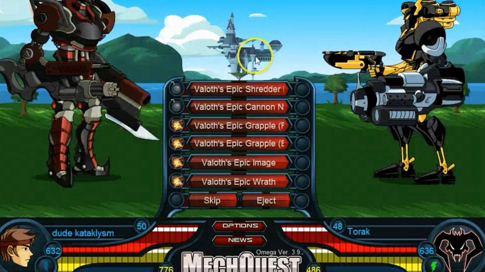

At the very beginning, I was very confused with what was tasked for, I usually have a specific brief of what to do for every assignment but for this one, the task was to figuring out somethings your own, which kinda confusing for me.

My first idea to “recreating others’ creation” is to mixing characters of an actor across movie. For example, taking Deadpool and Green Lantern, both played by Ryan Reynold and swap them with each other, bringing Deadpool to the Green Lanterns’ universe and also the other way. But later I scrapped the idea and turn it into a different one.

Since I was small, I was really enjoyed arcade platformer fighting games like Street Fighter, Bloody Roar and more recently, Super Smash Bros. I also loves superheroes and robot, so I figure I’m gonna merge theme all together. That was how I came up with the idea to turn supeheroes into robot and put them into to fighting stages just like those 80s’ arcade fighting games.
What’s next was the hard part, give it a name.